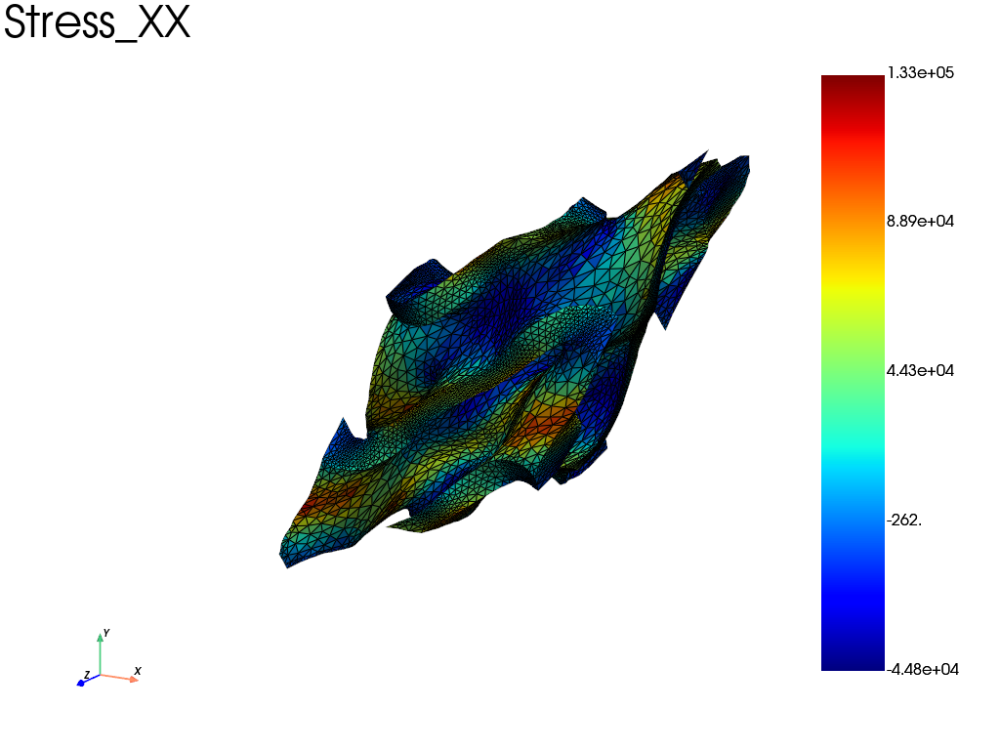

Note
Go to the end to download the full example code.
Off-axis tensile test on a gyroid unit cell with periodic boundary conditions
The periodic mesh of the Gyroid has been generated with microgen.
This example shows how to define periodic boundary conditions with
fedoo.constraint.PeriodicBC and to load the structure with a
prescribed mean strain in a local coordinate system rotated by 45° about
\(z\) (off_axis_rotation). The mean stress and mean strain are then
extracted in the local and global coordinate systems.
import fedoo as fd
import numpy as np
from scipy.spatial.transform import Rotation
Mesh, material and linear problem
Periodic boundary conditions require a periodic mesh (matching nodes on opposite faces), which is checked here.
fd.ModelingSpace("3D")
mesh = fd.Mesh.read("../../util/meshes/gyroid_per_clean.vtk")
assert mesh.is_periodic()
# Material definition
material = fd.constitutivelaw.ElasticIsotrop(1e5, 0.3)
wf = fd.weakform.StressEquilibrium(material)
# Assembly
assembly = fd.Assembly.create(wf, mesh)
# Define linear problem
pb = fd.problem.Linear(assembly)
Boundary conditions
The global mean strain components are eliminated from the problem when
off_axis_rotation is given, so they can no longer be prescribed: for
instance pb.bc.add("Dirichlet", "E_xx", 1) would have no effect. The load
is applied on the local components E_11, …, E_23 instead.
# periodic constraint in local frame
local_frame = Rotation.from_rotvec([0, 0, np.pi / 4])
bc_periodic = fd.constraint.PeriodicBC("small_strain", off_axis_rotation=local_frame)
pb.bc.add(bc_periodic)
# block a node near the center to avoid rigid body motion
pb.bc.add("Dirichlet", mesh.nearest_node(mesh.bounding_box.center), "Disp", 0)
# off axis traction along the local x axis = '1'
pb.bc.add("Dirichlet", "E_11", 1)
Dirichlet boundary condition:
var = 'E_11'
n_nodes = 1
value = 1
Note
Without off_axis_rotation, the periodic constraint only creates the
global mean strain dofs MeanStrain (E_xx, …, E_yz). The six
components can then be prescribed at once in the global frame, for
instance a pure shear \(\gamma_{yz} = 2 \varepsilon_{yz} = 1\):
pb.bc.add(fd.constraint.PeriodicBC("small_strain"))
# [E_xx, E_yy, E_zz, E_xy, E_xz, E_yz], engineering shear strains
pb.bc.add("Dirichlet", "MeanStrain", [0, 0, 0, 0, 0, 1])
pb.solve()
pb.get_results(assembly, "Stress").plot("Stress", "YZ")
Solve and print the macroscopic strain and stress tensors
The mean strain and its reaction can be read from the results (as below) or
directly with pb.get_dof_solution("LocalMeanStrain") and
pb.get_ext_forces("LocalMeanStrain"). The reaction to the mean strain
dofs is the mean stress times the cell volume (voids included).
The mean strain dofs use the Voigt notation [11, 22, 33, 12, 13, 23] with
engineering shear strains \(\gamma_{ij} = 2 \varepsilon_{ij}\) (see
fedoo.constraint.PeriodicBC), so the shear terms are divided by 2 to
build the strain tensor. The stress tensor shear terms need no correction.
pb.solve()
res = pb.get_results(
assembly,
[
"LocalMeanStrain",
"MeanStrain",
"Stress",
"Disp",
"Fext(MeanStrain)", # dual variable associated to strain is: stress * volume
"Fext(LocalMeanStrain)",
],
)
res.plot("Stress", "XX")
np.set_printoptions(3)
mean_strain = res["LocalMeanStrain"].ravel()
print(
"Strain tensor in local frame:\n",
np.array(
[
[mean_strain[0], mean_strain[3] / 2, mean_strain[4] / 2],
[mean_strain[3] / 2, mean_strain[1], mean_strain[5] / 2],
[mean_strain[4] / 2, mean_strain[5] / 2, mean_strain[2]],
]
),
" \n\n",
)
mean_strain = res["MeanStrain"].ravel()
print(
"Strain tensor in global frame:\n",
np.array(
[
[mean_strain[0], mean_strain[3] / 2, mean_strain[4] / 2],
[mean_strain[3] / 2, mean_strain[1], mean_strain[5] / 2],
[mean_strain[4] / 2, mean_strain[5] / 2, mean_strain[2]],
]
),
" \n\n",
)
volume = mesh.bounding_box.volume # volume of the unit cell, including voids
mean_stress = res["Fext(LocalMeanStrain)"].ravel() / volume
print(
"Stress tensor in local frame:\n",
np.array(
[
[mean_stress[0], mean_stress[3], mean_stress[4]],
[mean_stress[3], mean_stress[1], mean_stress[5]],
[mean_stress[4], mean_stress[5], mean_stress[2]],
]
),
" \n\n",
)
mean_stress = res["Fext(MeanStrain)"].ravel() / volume
print(
"Stress tensor in global frame:\n",
np.array(
[
[mean_stress[0], mean_stress[3], mean_stress[4]],
[mean_stress[3], mean_stress[1], mean_stress[5]],
[mean_stress[4], mean_stress[5], mean_stress[2]],
]
),
" \n\n",
)
# Compute the mean stress tensor by integration over the domain
# The difference with the previous method is due to numerical errors
mean_stress = [1 / volume * mesh.integrate_field(res["Stress"][i]) for i in range(6)]
print(
"Stress tensor using integration:\n",
np.array(
[
[mean_stress[0], mean_stress[3], mean_stress[4]],
[mean_stress[3], mean_stress[1], mean_stress[5]],
[mean_stress[4], mean_stress[5], mean_stress[2]],
]
),
" \n\n",
)

Strain tensor in local frame:
[[ 1.000e+00 -1.222e-03 4.749e-04]
[-1.222e-03 -2.415e-01 5.056e-04]
[ 4.749e-04 5.056e-04 -3.296e-01]]
Strain tensor in global frame:
[[ 3.805e-01 6.208e-01 -2.173e-05]
[ 6.208e-01 3.780e-01 6.933e-04]
[-2.173e-05 6.933e-04 -3.296e-01]]
Stress tensor in local frame:
[[ 1.336e+04 4.458e-10 1.439e-11]
[ 4.458e-10 -3.748e-10 -5.813e-12]
[ 1.439e-11 -5.813e-12 -8.573e-10]]
Stress tensor in global frame:
[[ 6.678e+03 6.678e+03 1.402e-11]
[ 6.678e+03 6.678e+03 5.849e-12]
[ 1.402e-11 5.849e-12 -8.573e-10]]
Stress tensor using integration:
[[ 6.678e+03 6.678e+03 1.379e-11]
[ 6.678e+03 6.678e+03 1.557e-11]
[ 1.379e-11 1.557e-11 -8.750e-10]]
Total running time of the script: (0 minutes 4.021 seconds)